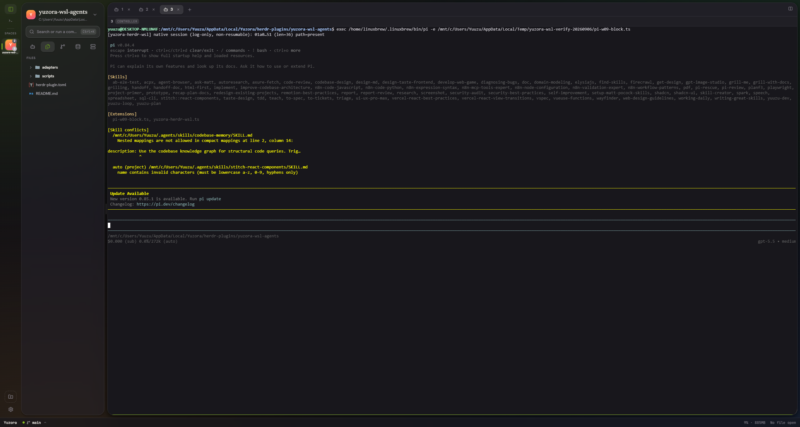
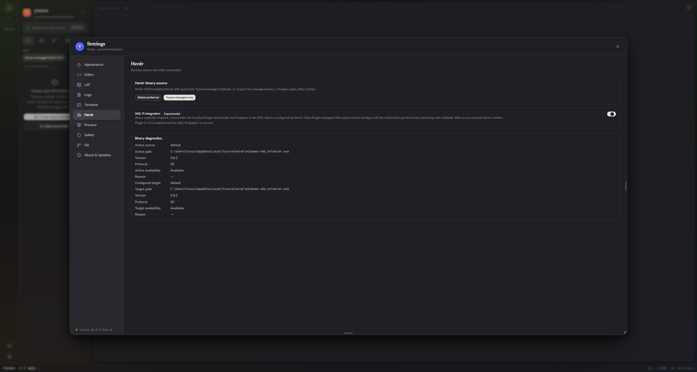
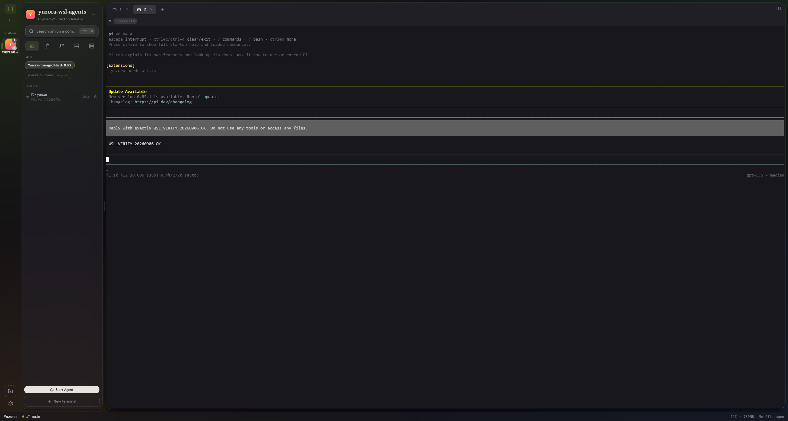
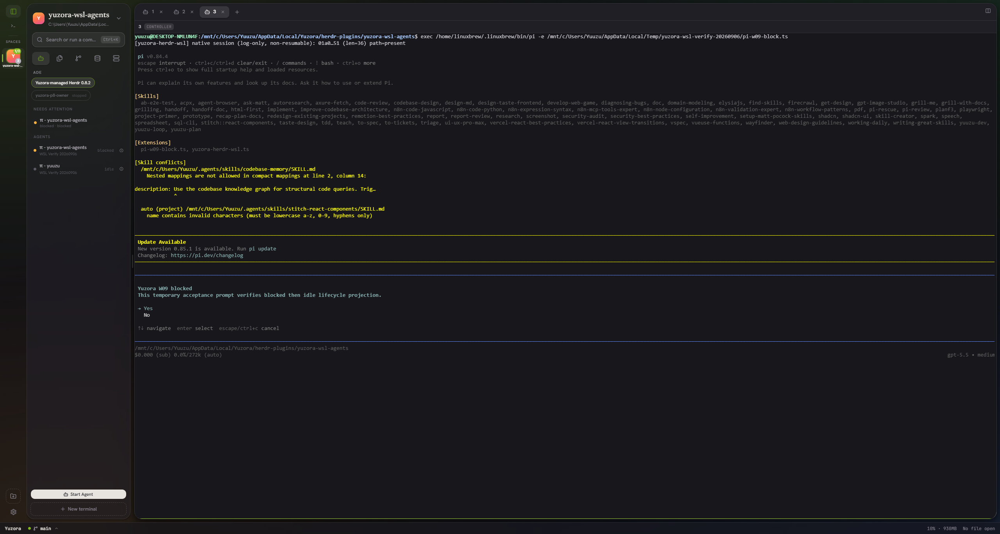
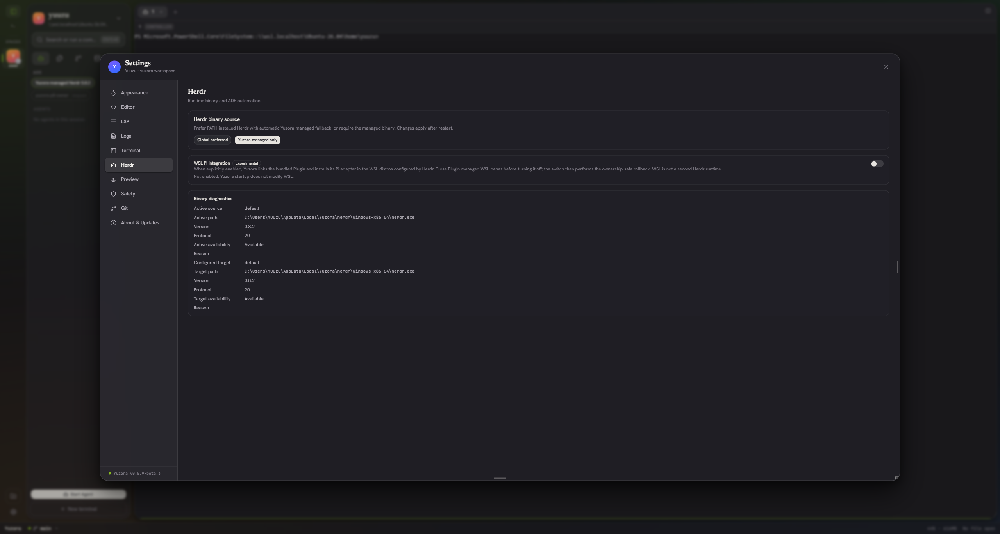

WSL Pi 能運作，但目前不宜判定完整整合可用
0.0.9-beta.3 / 9d0634c 的 MSI 候選，Settings、Pi 提示與 idle／working／blocked UI 投影均成功。新發現的 cwd 來源錯置會讓 Files 與後續 WSL pane 指向 Plugin 安裝目錄；應先修正這個問題，再補雙 distro 驗收。維持 Experimental，不建議據此放行 beta.3。此次測的是哪個版本
| 公開版本 | GitHub 最新 Pre-release 為 v0.0.9-beta.2；最新 Stable 為 v0.0.8。beta.3 尚未公開發布。 |
|---|---|
| 候選與 PR | Draft PR #89，head 9d0634c44e314b3dcc1c39b371ed448481b2f16a，tree 91f58722d7cd7bae9400eaddb8c0042eaa4a4665。 |
| 主機與 runtime | DESKTOP-NMLUN4F；Windows 11 Pro build 26200；Ubuntu-26.04 / WSL2；Pi 0.84.4；Yuzora-managed Herdr 0.8.2 / protocol 20。 |
| MSI SHA-256 | 423a4e795e9378ab62f31cf0886e8301adbf088245d14d458f1914fb3ce83c4e；本輪實際安裝、UI／runtime 驗證及卸載。 |
| NSIS SHA-256 | ea07e79bad69315a540a9ea8b70cf5d48a0517774895884e8f97957242fc93b2；本輪只重核雜湊，未重跑安裝流程；前次同候選的證據另存原驗收文件。 |
| 套件檔案 | 10 個 runtime 檔案皆與 source 相符：3 個 WSL 消費的 adapter 檔案為 LF 且 raw SHA 相等；其餘 Windows 檔案與 source 的 CRLF 形式相等。未把 macOS raw SHA 的換行差異誤判為內容差異。 |
本輪實測結果
| 項目 | 結果 | 證據與界限 |
|---|---|---|
| 冷啟動、版本／protocol | PASS | 安裝前 app、adapter、Yuzora／Herdr 程序均不存在；從安裝位置啟動並連上 managed 0.8.2 / 20。 |
| Settings 開啟與關閉 | PASS | disabled → Plugin 0.1.0 enabled / adapter current → disabled；結束時 CLI 複核 unlinked / absent。沒有重現永遠 Checking。 |
| Pi 啟動、文字輸入／回覆 | PASS | Plugin-managed pane 啟動 Pi；透過 pane input 傳入固定提示，實際回覆 WSL_VERIFY_20260906_OK。沒有要求工具執行或讀取專案。 |
| working → idle | PASS | HERDR agent API 與 Yuzora DOM 都觀察到轉換；UI working 05:06:32.860Z → idle 05:06:36.455Z。DOM 紀錄；不是原始 events stream 的錄製。 |
| blocked → idle、Attention | PASS | 僅於第二個 Plugin-managed shell 用 pi -e 載入 repo 的 W09 confirm fixture；UI 與 API 顯示 blocked，Esc 取消後 idle。這是實際 Pi UI hook 測試，不是模型工具權限對話的驗收。 |
| Agent control API | 已知限制，實機確認 | herdr agent prompt 回 agent_not_ready: ... no longer the pane foreground process；pane input 可用。identity／state 成功不代表 Agent control API 可用。 |
| 工作目錄／Files／新 shell | FAIL，新發現 | Linux Pi cwd 與 Windows launcher cwd 不一致；Yuzora 採用後者，新 shell 也繼承錯誤 context。詳見下節。 |
| W18 雙 distro | 未執行 | 主機只有一個實際 distro。已詢問建立暫時第二 distro 的核准，本輪尚未收到，因此沒有建立／複製。既有同 distro 的兩個 panes 不等同 W18。 |
| 資源觀察與回滾 | 本輪無異常 | 137 samples／約 5 分 23 秒：最低可用 RAM 20.26 GiB；最高 commit 39.68%；最高 CPU sample 37%；包含 WSL VM 的 tracked working set 最高 2.72 GiB。短測不能證明長時間無洩漏。 |
需要先修正的 cwd 問題
重現條件：在非 worktree、沒有 workspace-level cwd 的 snapshot 中，以 \\wsl.localhost\Ubuntu-26.04\home\yuuzu 建立 Space，再開 Plugin WSL Pi。
Pi 實際 !pwd：/home/yuuzu
Agent 回報 cwd：C:\Users\Yuuzu\AppData\Local\Yuzora\herdr-plugins\yuzora-wsl-agents
Yuzora Space.path → Plugin 目錄 → Files 顯示 Plugin 檔案
再開 WSL shell → /mnt/c/Users/Yuuzu/AppData/Local/Yuzora/herdr-plugins/yuzora-wsl-agents
herdrNormalize.ts 第 74 行依序掃描 [agentsRaw, panesRaw]，取第一個 cwd 作 Space fallback；因此正確 root pane cwd 被 Agent launcher cwd 蓋過。herdrStore.ts 的 restoreFocusedState 會再用 Space.path 開啟本機工作目錄。本輪把實機 snapshot 餵入原始 normalization 函式，能直接重現同一個錯誤路徑。
這個判斷有三份相互對應的證據：原始 snapshot、原函式重現結果、下方 Files 截圖。沒有寫入或更動 Plugin 內容。

較好的解法
| 方向 | 適合需求 | 判斷 |
|---|---|---|
| 保留 Windows Herdr＋WSL Pi Plugin，修正 cwd contract | 近期交付 Yuzora 內的 WSL Pi terminal 與 live state | 優先建議。先保存／採用明確的 Space root，避免拿 Plugin launcher cwd 覆蓋 project root；Plugin 新 pane 也必須繼承同一個可信任的 workspace cwd。若上游無 authoritative workspace root，需明確、可驗證的來源優先序與 provenance，不能僅依陣列順序猜測。 |
| Windows 原生 Agent＋官方 integration | 工具鏈不依賴 Linux，想減少 Windows↔WSL 邊界 | 官方支援 Windows Pi／Claude Code／Codex 等 integration；可避免此次 WSL cwd 橋接問題，但仍受 Windows runtime 的既有限制。此次沒有替使用者遷移或實測各原生 Agent。 |
| Linux／WSL 單一 Herdr runtime，再做完整 remote provider | 以 Linux 工作區、多 Agent、恢復與控制能力為核心 | 值得另立架構計畫。官方 Windows client 可 herdr --remote 連 Linux／macOS，但 Yuzora 目前只接 Windows-native runtime；TUI remote attach 不會自動補齊 Yuzora 的 snapshot、events、terminal、paths 與檔案操作整合。必須另立 ADR 取代／擴充現有 ADR-0002。 |
近期修正的驗收至少要包含：UNC 與 Windows drive root、非 Git 資料夾、多 Agent／多 pane、agent/pane array 重新排序、關閉初始 root pane、切換 tab、新建 Plugin shell、Files 與實際 Linux cwd 一致。修正會產生新的 candidate；9d0634c 的安裝包驗收不能直接替代新候選的驗收。
不建議為了完成 v0.0.9 就升級到 Herdr preview 或直接恢復雙 runtime provider。最新 Stable 仍是 0.8.2；官方限制與本轮觀察相符，尚無已驗證的較新 Stable 可直接解決此整合問題。
畫面證據
Settings：adapter 已啟用

Pi：真實提示與回覆

Pi：blocked 與 Attention

Settings：停用與回滾

結束狀態與來源
本輪只新增此報告與 evidence assets，未修改產品程式、未執行 Git add／commit／push、未更新 GitHub Issues／PR／acceptance variables。原有 dirty files 保留。測試 Space 已刪除，工作目錄先恢復原本 Ubuntu home；Settings 關閉、Plugin unlinked、adapter absent、MSI 卸載成功、app root 不存在、Yuzora／Herdr／Pi／reporter 測試程序為零。臨時排程與 CDP 設定／SSH tunnel 已清除。既有 Ubuntu 保留，WSL 仍為 Running；測試記錄留在 Windows Temp 與本報告 assets。
- 主機 cleanup 證據、Plugin／adapter 最終狀態、資源摘要。
- Issue #90：Bundled Experimental 範圍與過往 gates；既有候選驗收紀錄。本輪 cwd failure 補充舊紀錄，不改寫過去已執行的結果。
- Herdr Stable 0.8.2；同 tag 的 Windows 文件；remote 文件。
- ADR-0002：Windows-native Herdr；Plugin 操作與限制。